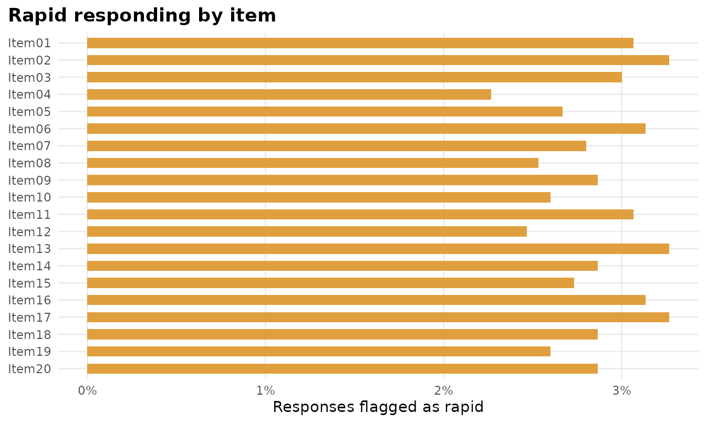
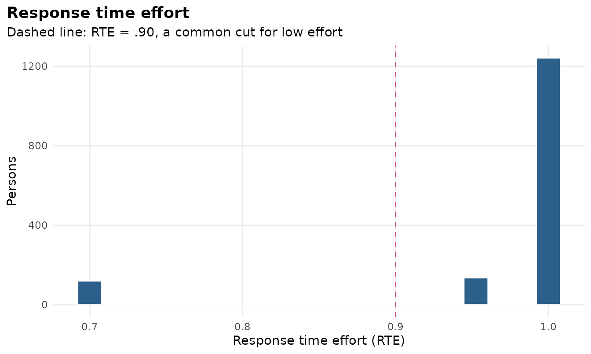
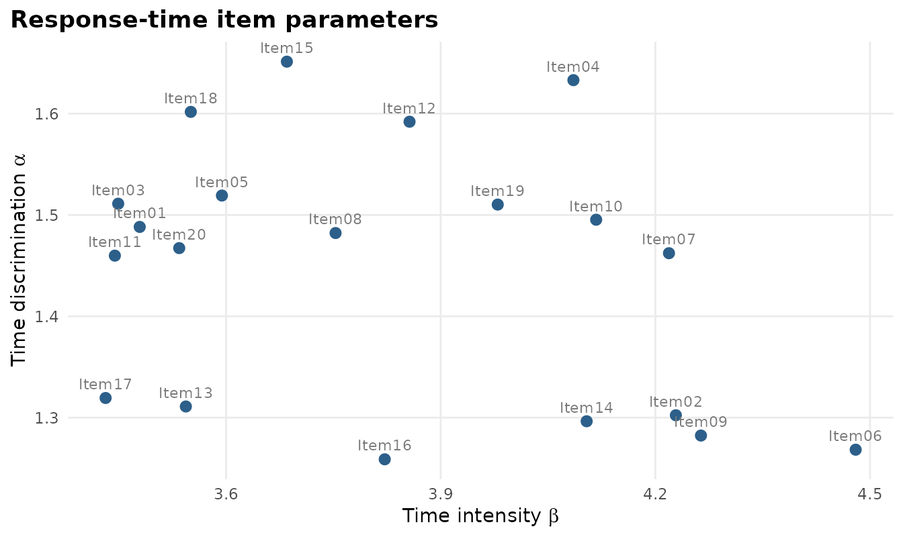
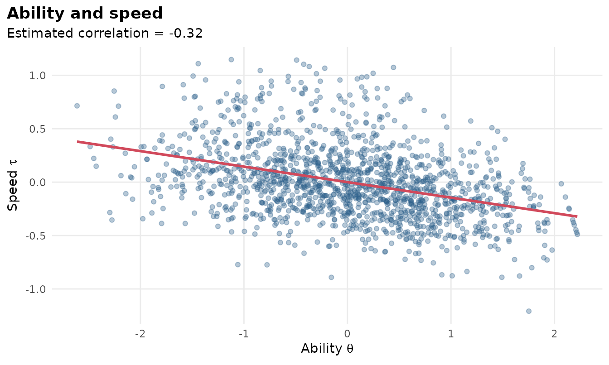

Computer-based tests record how long each response took. mirtverse uses those times together with a fitted mirt model, following van der Linden’s (2007) hierarchical framework:
- Time intensity (): how long item j takes on average (log scale).
- Time discrimination (): how consistently the item’s times reflect a person’s speed.
- Speed (): how fast person i works, correlated with ability .
Simulated example
sim_rt() generates responses and response times; here 8%
of examinees rapid-guess on some items.
sim <- sim_rt(N = 1500, J = 20, rho = -0.3, rapid = 0.08, seed = 2026)
mod <- mirt(sim$responses, 1, verbose = FALSE)
fit <- fit_rt(mod, sim$rt)
fit
#> Joint model for responses and response times (van der Linden, 2007)
#> 1500 persons, 20 items; converged after 7 iterations; logLik = -50396.33
#>
#> Speed SD = 0.375 (SE 0.010); ability-speed correlation = -0.325 (SE 0.031)
#>
#> item beta se_beta alpha se_alpha prop_rapid
#> Item01 3.479 0.023 1.488 0.026 0.031
#> Item02 4.229 0.026 1.302 0.022 0.033
#> Item03 3.449 0.023 1.511 0.026 0.030
#> Item04 4.085 0.023 1.633 0.026 0.023
#> Item05 3.594 0.023 1.519 0.028 0.027
#> Item06 4.480 0.026 1.268 0.020 0.031
#> Item07 4.219 0.024 1.462 0.023 0.028
#> Item08 3.753 0.024 1.482 0.024 0.025
#> Item09 4.264 0.025 1.282 0.022 0.029
#> Item10 4.117 0.024 1.495 0.024 0.026
#> Item11 3.445 0.023 1.460 0.026 0.031
#> Item12 3.856 0.023 1.592 0.027 0.025
#> Item13 3.544 0.024 1.311 0.025 0.033
#> Item14 4.104 0.025 1.296 0.022 0.029
#> Item15 3.685 0.024 1.651 0.027 0.027
#> Item16 3.822 0.025 1.259 0.023 0.031
#> Item17 3.432 0.024 1.319 0.026 0.033
#> Item18 3.551 0.022 1.602 0.029 0.029
#> Item19 3.980 0.024 1.510 0.024 0.026
#> Item20 3.535 0.023 1.467 0.026 0.029
#>
#> Rapid responses (residual): 2.9% overall; mean response time effort = 0.971
interpret(fit)
#> Overview
#> --------
#> * Response times for 1500 persons on 20 items were modelled with the
#> lognormal model, jointly with the fitted IRT model.
#>
#> Speed and ability
#> -----------------
#> * The correlation between ability and speed is -0.32 (SE 0.03):
#> higher-ability examinees tended to work more slowly (more carefully). The
#> speed SD is 0.37 on the log-time scale.
#>
#> Items
#> -----
#> * The most time-intensive item is Item06 (median 95.0 s); the least is Item17
#> (median 33.0 s).
#>
#> Rapid responding
#> ----------------
#> * 2.9% of responses were flagged as rapid (residual method); 8.0% of
#> examinees have response time effort below .90.
#> * Consider filtering low-effort examinees (motivation filtering) or
#> down-weighting rapid responses before reporting scores.
#>
#> Person fit
#> ----------
#> * 8.0% of examinees have aberrant overall timing (l_t p < .05), against 5%
#> expected by chance.Rapid guessing
Several rules are available. The default "residual" rule
flags a response that is much faster than expected for that person on
that item. The normative threshold rules "nt10",
"nt15" and "nt20" flag responses faster than
10%, 15% or 20% of the item’s mean time, with each threshold capped at
10 seconds (Wise & Ma, 2012). Change the cap with
nt_max, or set nt_max = Inf to drop it. The
item thresholds are stored in fit$thresholds.
mean(fit$flags[sim$rapid]) # share of simulated rapid guesses detected
#> [1] 1
mean(fit$flags[!sim$rapid]) # false alarms
#> [1] 0.004781421
autoplot(fit, "rapid")
autoplot(fit, "rte")
Response time effort (RTE) is each examinee’s share of non-rapid responses (Wise & Kong, 2005). Examinees below .90 are often excluded before reporting group results (motivation filtering).
persons <- augment(fit)
head(persons)
#> # A tibble: 6 × 9
#> theta se_theta theta_responses_only tau se_tau n_rt rte lt
#> <dbl> <dbl> <dbl> <dbl> <dbl> <dbl> <dbl> <dbl>
#> 1 0.268 0.406 0.169 -0.643 0.142 20 1 14.4
#> 2 0.689 0.425 0.674 -0.173 0.142 20 1 6.43
#> 3 1.44 0.491 1.47 -0.0689 0.142 20 1 13.0
#> 4 -0.989 0.426 -0.870 0.795 0.142 20 0.7 101.
#> 5 0.807 0.433 0.747 -0.431 0.142 20 1 9.56
#> 6 -0.658 0.410 -0.675 -0.0207 0.142 20 1 4.93
#> # ℹ 1 more variable: lt_p <dbl>Item parameters and the ability-speed relation
tidy(fit)
#> # A tibble: 42 × 5
#> component item term estimate std.error
#> <chr> <chr> <chr> <dbl> <dbl>
#> 1 item Item01 beta (time intensity) 3.48 0.0234
#> 2 item Item02 beta (time intensity) 4.23 0.0261
#> 3 item Item03 beta (time intensity) 3.45 0.0232
#> 4 item Item04 beta (time intensity) 4.09 0.0227
#> 5 item Item05 beta (time intensity) 3.59 0.0233
#> 6 item Item06 beta (time intensity) 4.48 0.0258
#> 7 item Item07 beta (time intensity) 4.22 0.0243
#> 8 item Item08 beta (time intensity) 3.75 0.0241
#> 9 item Item09 beta (time intensity) 4.26 0.0254
#> 10 item Item10 beta (time intensity) 4.12 0.0236
#> # ℹ 32 more rows
autoplot(fit, "items")
autoplot(fit, "persons")
Notes
The item response parameters are taken from the mirt model and held
fixed; the response-time parameters, speed variance and ability-speed
correlation are estimated by marginal maximum likelihood. Because times
act as collateral information, the joint ability estimates
(theta) can be slightly more precise than the response-only
estimates (theta_responses_only) when ability and speed are
strongly correlated.
References
van der Linden, W. J. (2007). A hierarchical framework for modeling speed and accuracy on test items. Psychometrika, 72, 287-308.
Wise, S. L., & Kong, X. (2005). Response time effort: A new measure of examinee motivation in computer-based tests. Applied Measurement in Education, 18, 163-183.